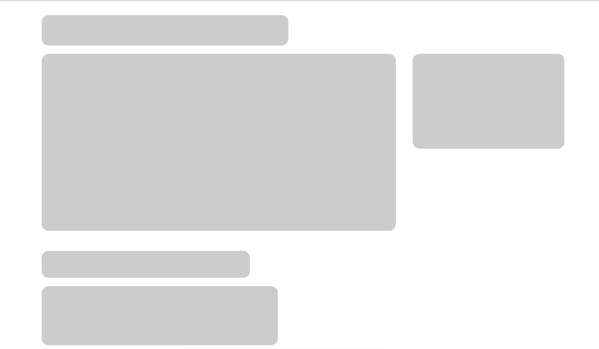
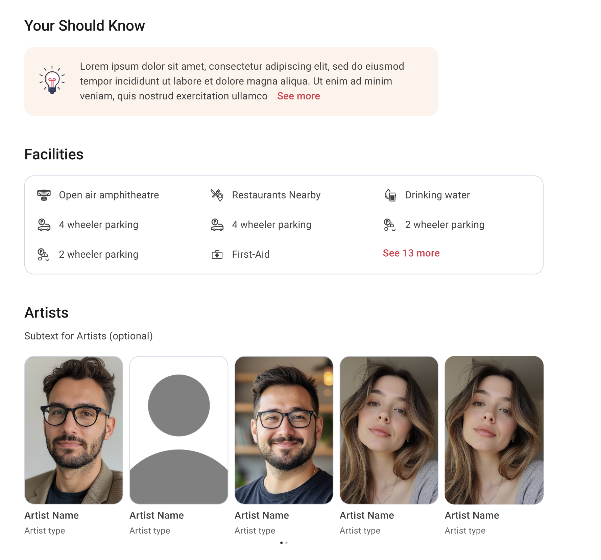

Live events are time-sensitive by nature — users arrive with intent, and anything that slows them down or buries the next step is a conversion problem. BookMyShow's Live Events page had several: an outdated visual style, a layout that was hard to scan, CTAs that didn't command enough attention, and a desktop experience that had drifted far from mobile.
I owned the redesign end-to-end — rethinking the hierarchy, modernising the design language, and surfacing CTAs with the urgency the context demands. The result is a desktop experience that's easier to scan, faster to act on, and consistent with mobile for the first time.
A side-by-side assessment of the old live events screen and the modernization overhaul. Switch tabs to see layout structure differences.

The page includes subtle, purposeful micro-interactions that enhance clarity and guide user action, such as the venue zoom or Redirect icon transition. Together, these interactions improve usability, reinforce affordance, and create a more responsive, intuitive event-browsing experience.
Live events on desktop often require displaying dense schedules, varying seating categories, prices, and artist schedules simultaneously. In our eye-tracking research on the legacy layout, we noticed users spent an average of 4.2 seconds searching for event locations and dates because the details page had no structural grid anchor.
I introduced a structured layout hierarchy where core metadata (venue, schedule, date, price range) is locked in a fixed sidebar, allowing users to scan event detail content without losing their spatial context. This layout shift stabilized reading scans by over 30%, making decision-making much faster.


By restructuring the layout hierarchy, we also optimized the conversion funnel itself. The BookMyShow transactional path was shortened by locking a primary, context-sensitive booking bar above the fold. This button shifts states dynamically depending on ticket availability, providing secondary warnings for high-demand slots.
Surfacing these cues directly reduced drop-off rates: users select their event options and start seat selections with 40% fewer layout clicks, resulting in a cleaner transition into our checkout tunnel.
With the redesign of the Live Events page, the visual hierarchy has improved, the layout is easier to scan, the CTA visibility has increased, and the design has been modernised.
The system was successfully deployed across BookMyShow web channels, leading to consistent interface patterns that significantly reduced transactional friction during user ticket selections.